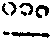

吹萬禪師語錄卷之六
頌古(著拈)
世尊上座文殊白椎。
長安尊貴人難住功勛猶自出輕車巫峽猿啼數行淚衡陽飛雁幾封書何似歸來花樹下把酒高歌意自舒。
墮墮連我也在地獄裏不墮不墮恁麼又怎拔得起一粒鼠糞污鍋羹況復八粒叫誰洗雲門棒下轉身來牧唱樵歌皆繇爾。
岟崛持語。
看八地文打失布袋。
牧庵機緣。
兩眼如磨被水所推磨爛心子來說是非。
回石頭機緣。
鑿石石鑿兩火並發悟箇甚麼硜磕硜磕。
馬祖傳書道欽。
南遇二老唱和。
趙州勘婆子。
雲門須彌山。
竹篦子。
乾屎橛。
長尺八寸兩楞一徑灰裏土埋人人有分。
德山托缽。
末後句。
倒騎紅鼻子踏破面黃頭三更蝦蟆叫月宮海底流。
法身。
麥地牛生草沙河馬捉魚紅爐冰種火梅花夜讀書。
竿頭進步。
腳板戴紗帽牙齒寫行書虎頭獨角龜蓮花上老夫。
異類中行。
擺手倚門立埋頭拍掌笑翹足眼翻天側身開口叫。
懸崖撒手。
打破皇桶箍擊碎琉璃盞絆斷舊葛藤腦後躂箇眼。
青州公案(十首)。
天上天下唯吾獨尊。
金剛道後異熟空大圓無垢同時發。
舉一不得舉二。
一光東照彌勒起問文殊為說。
獨倫恰肖魯公癡彈珮湎然三不知斯時逐鹿誰優劣莊伯徒勞揮劍切君不見玉斗擊碎一腔血。
爆竹。
火花(四首)。
示四字。

汾陽十智同真。
八萬四千陀羅手手手各執不相知憐蚿未必齊百足神用天然莫可思君不見戲棚蝶臉烏紗帽強作悲歡與合離曲罷帳中無箇事你是何人我是誰。
遠錄公九帶。
莫道黃金無變易印觚鐶帶數千般有時插在婦人頭有時信行天地間簠簋隊中和八修端冕腰間鮮赤舄上方肘後任施為冶煉依然赤骨歷。
德山。
東西過後只道無一喝重來是丈夫不審祖師有何惡把茅蓋頭許罵渠可是潭中一臥龍滅燭開光不用功劍樹爪牙血盆口知他孤迥上高峰一條脊骨硬如鐵一根拄杖拗不折卻被巖頭捏怪來末後三年沒搭撒。
巖頭。
為甚承當號奯公密啟其意未為通何如廊下拍巴掌臥在鼇山罵雪峰蓋天蓋地自胸襟打斷當年亂腳跟一封書到謝不盡又道同條賺殺人是則是欠伶俐剛被婆子丟箇兒默默無言難出氣。
睦州。
現成公案三十棒挑得水來全沒帳盞子落地楪子七裂去收來有何益冤遭黃檗苦鉗錘痛殺雲門腳一隻看來都是掠虛漢辛辛辣辣門裏轉有人問著是甚麼只道秦時[車*度]轢鑽。
雲門。
好箇兒郎生下地靈樹口邊已成記折腳痛處是宗源昧卻別向雪峰去漏箇消息帶鐵枷搊住稍書亂如麻原來不是門外客打鼓還須弄琵琶跛跛挈挈好摟兜餬餅扇子與饅頭只能薦得第二句人天為師出口氣。
女子出定。
丙丁童子討火因緣。
五宗。
洞山兼帶唱絕奇觸著河山影畫眉通臨濟妙用縱橫腦後視貫法眼六臂那吒乘軒冕徹雲門白頭老婦捧銀盆透溈山海底靈龍拍巴掌不是門庭愛穿鑿巧兒慣向空裏索拈來一舉一回新蝶臉蒼頭如是說說說說看。
阿誰叫弱喪窮兒失父早阿誰聽塞卻真常只破鏡踏遍毘盧海一漚毛孔誰云參不盡君不見古彌勒老釋迦出入逢迎月滿華。
默然良久。
暫時不語非無言默默豈徒咬著舌若將恁麼會其宗笑殺鬧市古彌勒不見石鞏示西堂拽得鼻頭痛不徹出入供佛於息中無端捏怪雲峰悅兩開本妙及無生洪覺深顯嗅聞訣胡盧吹響樹一株四維上下咸成雪可是枯木裏龍吟可是花開春外劫屎窖挑出沒思量莫道此語是予說。
洞山過水見影。
水清徹虛明無彼此魚鱉蝦蟹渾屋居草木飛栖沉影子不知未過此水時渠容又向何方止莫是處陰息其蹤莫是無我不生爾從茲漏逗沒遮攔金殿重重懸符璽一指一馬會將來大地溶溶誰是水。
鼯鼠。
只者語聲粥飯氣又道同起又同睡驀然枕子塌前鳴何似高峰參悟處呵呵呵奈若何鳥飛還羽路鱗宿昧魚窩直此物兮非他物休將鼯鼠亂猜摩。
世奇首座機緣。
兩響同一耳往來無罣礙穿頂破帽子顛倒一齊戴。
龐蘊居士問馬祖曰不與萬法為侶者是甚麼人(曲高和寡)祖云待汝一口吸盡西江水即向汝道(見煙必定是火見角必定是牛)士于言下頓領玄旨(果然賺入他網)。
拈云老老大大說者箇語話盡大地都是水口在甚麼處盡大地都是口水在甚麼處。
刺史陸亙大夫問南泉古人瓶中養一鵝(作甚麼去就)鵝漸長大(也是腫不益肥)出瓶不得(從來不在瓶內)如今不得毀瓶(無雲生嶺上)不得損鵝(有月在波心)和尚作麼生出得(求醫罔效)泉召大夫(直入虎穴)陸應諾(纔得虎子)泉曰出也(賺殺人)。
拈云一切卵生俱在瓶裏大小南泉那能一箇箇出得盡縱使出得也是假道伐虢。
即墨尚用千牛聊城只書一箭漏逢刻而有聲珠在盤而自轉牽藤引蔓兮若檻車之囚人紅爐點雪兮似神鳥之脫罝。
刺史白居易居士問鳥窠禪師曰如何是佛法大義(平地起土堆)窠曰諸惡莫作(從來未曾殺人放火)眾善奉行(又要為蛇添足)易曰恁麼話三歲孩童也道得(太輕口生)窠曰三歲孩童雖道得(上大人丘乙己)八十老翁行不得(未若生一日而得覺了之)易領教(只得振衣彈冠)。
拈云者老漢久戀枯枝不肯懸巖撒手秪如尸棄佛道起諸善法皆是幻造諸惡業亦是幻身如聚沫心如風幻出無根無實性你作麼生行履去喜得官不容針私通車馬。
雪靜珠林扣一枝權拈黃葉賺啼兒石頑未解和心泣雲傍方將蜀道思死鷂懷時緣直諫敝衣留處引忠知應憐三月鵑聲苦為喚歸來莫放遲。
相國裴休居士見高僧真儀(見怪不怪其怪自壞)問黃檗曰真儀可觀(切忌認著)高僧何在(在者裏)檗朗聲曰裴休(真是探囊取物手段)公應諾(只得和盤托出)檗曰在甚麼處(對面分明藏不得大鵬金翅滿天飛)公當下知音(不因漁父引怎得見波濤)如獲髻珠(縱然奇特終是尋常)。
拈云者黃檗老子也是箇不知好惡的漢纔問高僧何在就落古人窠臼顯姓標名當時若是李老師在即把住云叫的是高僧耶應的是高僧耶渠也只得耳聽如聾口說如啞。
鹿焉為馬鳥豈是鸞苛法徙木之制蕭牆起禍之端不動干戈兮舌戰點醒枯骨兮還丹梅開縱有清香度終賴冰霜壯歲寒。
刺史李翱居士問藥山曰如何是道(醉客迷珠抱薪求火)山以手指上下(切忌裝風賣傻指東話西)曰會麼(早知燈是火飯熟已多時)曰不會(者不唧溜漢被人當面熱瞞)山曰雲在青天水在瓶(總是補中益氣湯加減)翱欣愜作禮(不入文殊門便落觀音戶)。
拈云俱胝和尚得天龍一指禪一生受用不盡那箇是豎起指頭的公案秪如藥山指上指下又作麼生會良久云蜻蜓點水蝸牛弄角。
燕人弱喪問家山指點南車路可攀假墓卻從襟袖溼親舁誰見淚痕斑葉飄樹底添新翠花放枝頭展舊顏不俟神槎重渡海張騫那得斗牛還。
秀才張拙居士參石霜(不免騎牛覓牛去也)霜問秀才何姓(釣竿頭上知輕重不是金鱗莫上鉤)曰姓張名拙(不要人誇好顏色獨留清氣滿乾坤)霜曰覓巧了不可得拙自何來(只令蒼龍脫骨金蟬退殼)公忽有省(不作忠良安入太廟)。
拈云石霜和尚也是慣用點鬼簿的漢纔逢人就問何姓若是箇有志氣的男兒值彼動口時即與一掌云者箇便是姓只叫伊巧拙難分。
長慶謂太傅王延彬居士曰(清淨木然云何忽生山河大地)雪峰豎拂子示僧(各人自掃門前雪莫管他家屋上霜)其僧便出去(也是良馬見鞭影而行)若據此僧(大似撥草尋蛇搜山逐虎)合喚轉痛與一頓(切莫誤人人罪)公曰是甚麼心行(路見不平旁人剷削)慶曰洎合放過(恁麼老婆心太切)。
拈云當初既知雪峰放過此僧何不代渠一召云某甲彼回頭即云是甚麼也得快馬加鞭望前所進卻來論人過失有甚麼交涉處。
操琴驚馬視鼓瑟動魚遊項白舞劍夷吾射鉤若還彈珮三不醒枉使雄兵夜血流長慶老喜綢繆只恐阿師空去也素影寒霜未識秋。
洞賓呂巖真人再參黃龍求指歸處(老鼠鑽牛角便見倒斷)半升鐺內煮乾坤即不問(下里謠歌那堪正調)如何是一粒粟中藏世界(要討自家茶飯不必拾人飯何)呂于言下頓契(始知飯是米作)遂作偈曰(朝為田舍郎暮登天子堂)棄卻瓢囊摵碎琴(念彼觀音力刀尋段段壞)如今不戀汞中金(一切有為法如夢幻泡影)自從一見黃龍後(誰知鼻孔原來在面上)始覺從前錯用心(湯水錢且置有人與你算草鞋錢在)。
拈云者洞賓道者也是一喚便回頭的漢倘不是黃龍刀刀見血未免報盡還來散入諸趣。
迦樓如意娑竭摩尼啄也轟雷燒赤尾啐兮破浪鼓蒼池昔日秦刀筆今朝漢傅師大節有符增鼎鼐青史名傳天下知。
常侍王敬初居士問僧一切眾生還有佛性也無(人人頂天立地箇箇鼻直眼橫)曰有(舉似我看)公指壁畫狗子(切莫弄假成真)曰者箇還有也無(積代簪纓暫時落薄)僧無對(不對最親切)公自代曰看咬著汝(打草驚蛇)。
拈云王常侍雖解白衣說法怎奈不遇作家費卻許多鹽醬當初若遇李老師在即與一喝云者箇是甚麼東西許你問有問無。
佛性猶如工伎兒幻成花鳥度春枝流橋住水賓非主空手提鋤我是誰妙喜翻圖明致格寒山扼腕助傷悲巴人解轉喉中舌卻使殘兵慕且思。
丞相王隨居士謁首山(無故抱鏡狂走)得言外之旨(是甚麼乾屎橛)自爾履踐(切莫動著動著三十棒)深明大法(依舊落在葛藤窠)臨終書偈曰(自寫分關遺囑)畫堂燈已滅(猶有火在)彈指向誰說(啞子做好夢)去住本尋常(神通並妙用運水及搬柴)春風掃殘雪(但得雪銷去自然春水來)。
拈云人到臘月三十日只懼債主上門未免埋頭縮腳者漢鼻孔端正負債已明所以臨難猶歌陽春白雪仔細看來果然詞熟腔正。
雲門糊餅趙州茶言外超宗別一家掉頭故落西山魄撒手權拈東土花君不見瀛洲神仙十八子出自桑樞蓬篳裏。
都尉李遵勗居士臨終時膈胃躁熱(只恐覺觀猶在)有尼道堅謂曰(來說是非者便是是非人)眾生見劫盡(茶來喫茶)大火所燒時(飯來喫飯)都尉切宜照管主人公(十方虛空包裹不著用照作麼)公曰大師與我煎一服藥來(禍福無門唯人自招)堅無語(果然說得行不得)公曰者師姑藥也不會煎得(未曾打破藥罐)。
大夢從來覺繁柯總是枯浪靜珠還在金停沙自無玄機縱不粘絲線裟角難逃一轉輪。
英公夏疏居士問藍浦百骸潰散時(佛法不是鮮魚那怕煩卻)那箇是長老自家底(不曾熽的是)藍曰前月二十離蘄陽(是第二月非是月影)公休去(口裏不言肚中暗許)。
拈云四大如泡幻隨生滅也是四大如金剛不生滅也是恁麼貪生怕死的漢就有許多分別喜得藍浦和尚漏出一句康衢謠卻也不識不知順帝之則。
瓶破雀飛意如何縱雖隨他識未波君不見桑間女子度九曲密矣思之妙不多。
文公楊億居士問雲巖諒監寺兩箇大蟲相咬時如何(何不以錫杖勸解)諒曰一合相(卻是兩箇在)公過廣慧曰我秪管看未審恁麼道還得麼(得便得只得一半)慧曰者裏即不然(切莫弄巧成拙)公曰請和尚別一轉語(也是箇骯髒的漢)慧以手作拽鼻勢(是則是太造作生)曰者畜生更[跳-兆+孛]跳在(未曾動著一步)公于言下脫然無疑(卻被拽進了也)。
拈云大小雲巖廣慧好與三十棒一時趁出何以故一箇撾沙抵水一箇賣弄精魂不知楊文公在甚麼處脫然無疑去良久云伐柯伐柯。
污樽土鼓無繁玉振金聲破格眾人畜之兮中行國士遇之兮智伯不識南泉異類行那能列上仙陀客。
節使李端愿居士問達觀曰心如何了(本無知覺用了作麼)觀曰善惡都莫思量(只恐內守幽閒猶是法華分別影事)公曰不思量後心歸何所(我不見一法在門外何故叫我進門)觀曰且請太尉歸宅(水流原在海月落不離天)。
拈云心不是有心不是無了亦不可歸亦不得只饒了無所了歸無所歸正好請太尉出宅。
心因境以了境會心而澄甘露唐將覆祥桑殷復興脫纏須就縛透網豈離罾驀直言無別翛然路可登。
太傅高世則居士初參芙蓉求指心要(自己寶藏不埋會拋家失業走甚麼)蓉令去其所重(去了千層甲來著七斤衫)扣已而參(原來阿爺自家父)。
拈云山不是山水不是水此是浪子忘家窮兒捨父只至踏破鐵草鞋山還是山水還是水于今扣已而參的話要人自肯在。
修撰曾會居士引中庸大學參以楞嚴符宗門語句質明覺(莫把鋀石擬作黃金)覺曰者箇尚不與教乘合(死貓兒頭終是川廣藥材)況中庸大學耶(大似毫末塞虛空一滴投巨壑)學士要從捷徑理會此事(不離當處常湛然覓即知君不可見)乃彈指一下(也是娑竭出水)曰但恁麼薦取(只要金翅善▆)公于言下領旨(果然衣下有珠)。
拈云水中鹽味色裏膠青者裏會得上大人不異如是我聞信受奉行豈亦外可知禮也是則是只恐二十四家書體雖會得永字八法又不識。
魚枕未冠終是骨昆吾雖釧豈離金途忘歸路先師馬絃不求聲也得琴更直捷莫沉吟殷勤為出兜羅手五色全收耀古今。
吹萬禪師語錄卷之六終